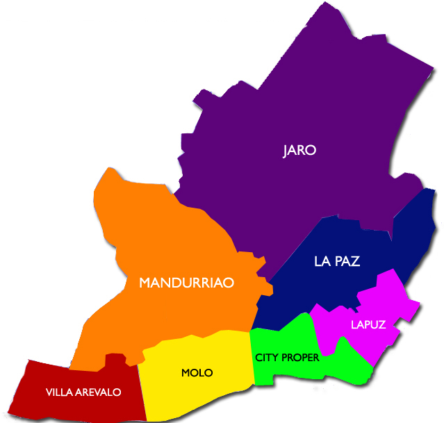

Location and Map
Iloilo can be reached on direct flights from major Philippine cities including Manila, Cebu, Davao, General Santos , Puerto Princesa, and Cagayan de Oro. Direct international flights are also available from Hong Kong and Singapore to the Iloilo Airport. By plane, travel time to Iloilo takes around 1 hour from Manila, 30 minutes from Cebu, 2 hours and 30 minutes from Hong Kong, and 3 hours and 30 minutes from Singapore.
Iloilo City is a tourist hub where the best restaurants, museums, hotels, shopping districts, and nightlife in the province await. It is most known for the annual Dinagyang Festival, exquisite heritage sites, deliciously fresh seafood, and signature Ilonggo dishes. The city is also home to many Spanish-colonial churches, grand vintage houses, and old commercial and institutional buildings dating back to its heyday as the “Queen City of the South.”
